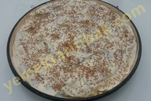

Kullanılan Malzemeler
2 su bardağı un
1 yumurta
5 gram kuru maya
1 kahve fincanı ılık su
1 su bardağı su
1 tatlı kaşığı toz şeker
Bir tutam tuz
Kızartma için çiçek yağı
Şurubu İçin
2 su bardağı su
2.5 su bardağı toz şeker
1 tatlı kaşığı limon suyu
İzmir Lokması Yapılışı
Kullanılan Malzemeler
2 su bardağı ılık su
1 bardak ılık süt
1 yemek kaşığı kuru maya
1 yemek kaşığı şeker
1 tatlı kaşığı tuz
Un
Sıvı yağ
Lokma Yapılışı
Kullanılan Malzemeler
Hamuru için:
1 buçuk su bardağı ılık su
1 su bardağından iki parmak eksik yoğurt
yarım su bardağı sıvı yağ
1 paket instant kuru maya
2 tatlı kaşığı şeker
1 tatlı kaşığı tuz
un
İç malzemesi için:
500 gr kıyma
1 adet kırmızı kapya biber
1 adet yeşil biber
yarım su bardağı domates rendesi
1 adet orta boy soğan
yarım çay bardağı zeytinyağı
1 çay kaşığı pul biber
1 çay kaşığı tuz (isteğinize göre arttırabilirsiniz)
Üzeri için:
1 adet yumurta sarısı
Kıymalı Pide Yapılışı
Kullanılan Malzemeler
Hamuru için:
2 su bardağı su
1 tatlı kaşığı tuz
1 çay kaşığı toz şeker
Aldığı kadar un (5 su bardağı kadar)
İçi için:
Yarım kilo kıyma
2 tane domates
2 tane soğan
5-6 tane yeşil biber
Yarım demet maydanoz
1 çay bardağı sıvı yağ
2 yemek kaşığı domates salçası
2 diş sarımsak
1 çay kaşığı pul biber
1 çay kaşığı toz biber
1 çay kaşığı kara biber
1 tatlı kaşığı kaşığı tuz
Tavada Lahmacun Yapılışı
Kullanılan Malzemeler
1 tane yumurta
1 su bardağı ılık su
1 su bardağı süt
yarım su bardağı sıvıyağ
1 paket instant kurumaya(10gr) veya 1 yemek kaşığı kuru pakmaya
1 yemek kaşığı şeker
1 tatlı kaşığı tuz
5-6 su bardağı un
İçine;
1 kase lor peyniri(250gr)
Üzerine;
1 yumurta
2 su bardağı yoğurt
yarım su bardağı sıvıyağ
1 çay kaşığı tuz
Dızmana Yapılışı
Kullanılan Malzemeler
4 tane yufka
1 su bardağı lor peyniri
150gr. kaşar peyniri
Sosuiçin:
yarım su bardağı yoğurt
yarım su bardağı sıvıyağ
1 tane yumurta
1 şişe soda
Sufle Börek Yapılışı
Kullanılan Malzemeler
3 adet yufka
Sosu için:
1 çay bardağı süt
1 çay bardağı sıvıyağ
1 adet yumurta
Yarım çay bardağı su
İç harcı için:
Az yağlı beyaz peynir, bir tutam maydanoz
Karabiber, tuz, kekik
Üzeri için:
1 adet yumurta sarısı
1 yemek kaşığı kadar sıvı yağ
Susam veya çörekotu
Üçgen Börek Yapılışı
Kullanılan Malzemeler
Yarım paket oda ısısında yumuşamış margarin (125 gram)
1 çay bardağı sıvı yağ
1 çay bardağı yoğurt
2 yumurta (birinin sarısı üzerine),
Yarım demet dere otu
1 çay bardağı beyaz peynir
1 paket kabartma tozu
1 yemek kaşığı şeker
1 tatlı kaşığıtuz
Aldığı kadar un
Üzeri için;
Yumurta sarısı
Şipşak Poğaça Yapılışı
Kullanılan Malzemeler
3 adet hazır yufka
1 çay bardağı süt
1 çay bardağı sıvı yağ
3 yemek kaşığı yoğurt
1 tane yumurta
250 gram lor peyniri
yarım demet maydanoz
Yarım şişe maden sodası
Sodalı Börek Yapılışı
Kullanılan Malzemeler
3 paket Kabartma Tozu
2 su bardağı Yoğurt
1 su bardağı Sıvı Yağ
4,5 su bardağı un
2 çay kaşığı Tuz
İç malzemesi için:
Yarım kg. lor peyniri
yarım demet maydanoz
Üzeri için:
1 su bardağı galeta unu
321 Poğaca Yapılışı
Kullanılan Malzemeler
3 adet yufka
Sosu için:
1 çay bardağı sıvıyağ
1 su bardağı süt
1 adet yumurta
İçi İçin:
Yarım kalıp lor peynir
yarım demet maydanoz
Peynirli Dolama Börek Yapılışı
Kullanılan Malzemeler
2 tane yumurta
1 su bardağı yoğurt
yarım çay bardağı sıvı yağ
1 tatlı kaşığı tuz
1 çay kaşığı şeker
1 tane kabartma tozu
un
Kızartmak için: Sıvı yağ
Yoğurtlu Hamur Kızartması Yapılışı

Kullanılan Malzemeler
4 adet yufka
1 tane yumurta
250 gr. ıspanak
lor peyniri veya beyaz peynir(bir su bardağı kadar)
kırmızı pulbiber
1 çay kaşığı tuz
1 çay kaşığı şeker
Üzeri için:
1 su bardağı yoğurt
1 yumurta
susam
Ispanaklı Peynirli Börek Yapılışı
Kullanılan Malzemeler
2 adet yufka
Sosu İçin:
1 çay bardağı sıvıyağ
yarım çay bardağı su
İçi için:
yarım kg.tavuk göğsü
1 su bardağı garnitür(ben pratik olsun diye hazır kullandım isterseniz 2 patates 2 havuç 250 gram bezelyeyi tek tek haşlayarak kendiniz hazırlayabilirsiniz)
1 tane kuru soğan
4 yemek kaşığı sıvıyağ
1 çay kaşığı tuz pulbiber ve karabiber
Üzeri için:
1 yumurta
Çörekotu
Garnitürlü Tavuklu Börek Yapılışı